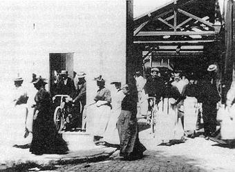
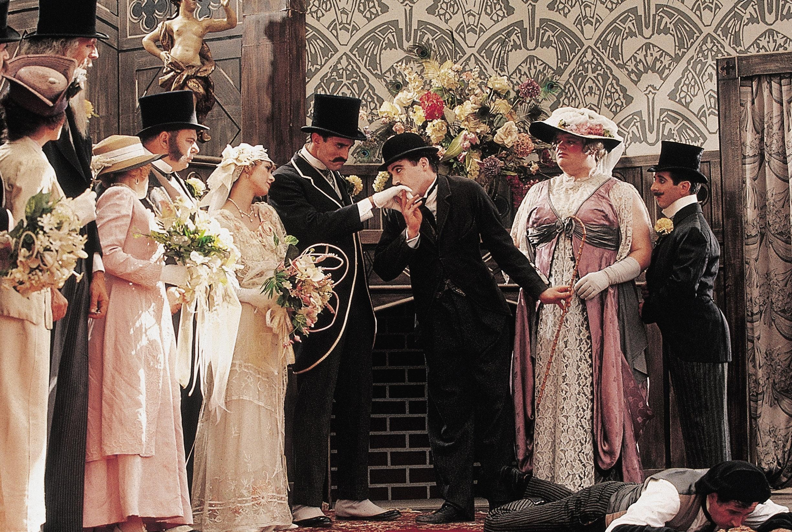
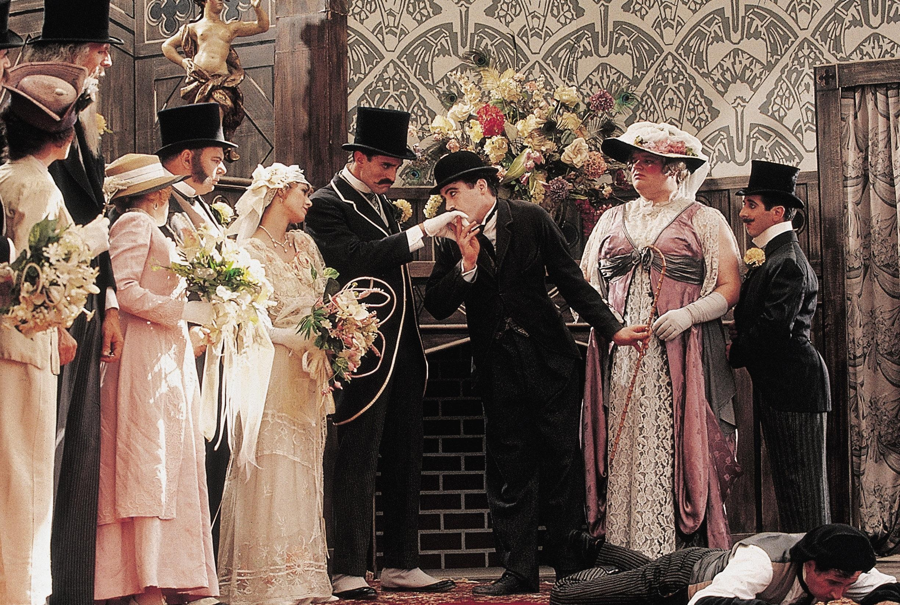

电影到底是谁发明的？这个问题各方说法不一，现在公认的电影诞生日，是1895年12月
28日，在法国巴黎的一家咖啡馆的地下室里，卢米埃尔兄弟以售票的方式，为观众播放
了他们拍摄的一组短片，这一次观影活动符合了现代商业电影的基本特征，因此被认
为是电影正式诞生的日子。
卢米埃尔兄弟拍摄的这第一部真正意义上的电影《工厂大门》，最早是在1895年3
月的法国巴黎的工业峰会上放映的，短片全名是《走出卢米埃尔工厂大门的工人
们》，目的是为了展现卢米埃尔家族工厂的兴盛以及精心对待员工的方式.

事实上，关于世界电影之父还有世界上第一部电影的讨论，是在电影出现
在大众视野的二三十年后，也就是1910—1920年之间这段时间才开始讨论，
而那个时候，人们对于电影的定义是film和movie，那个时候cinema还有
theater还是新兴词汇，而film和movie指代的名词就是在大银幕上观看活动影像
的形式，所以大多数学者就把卢米埃尔作为世界电影之父，卢米埃尔兄弟的《工厂
大门》作为世界第一部电影。
所以，电影之神就降临到了卢米埃尔兄弟的身上。
早期的电影是无声电影。格里菲斯在1915年以艺术家的勇气拍摄了世界电影
史上的经典无声片《一个国家的诞生》，在1916年又拍摄了《党同伐异》.
这两部被誉为电影艺术的典基之作，标志着电影成为艺术的起始。

美国喜剧电影大师查尔斯卓别林，也是无声电影时期杰
出的电影艺术家。1914年，编导了第一部影片《二十分
钟的爱情》。接着，《阵雨之间》又问世，在这部影片
中第一次出现了流浪的夏尔洛的形象。1927年是电影史
上具有划时代意义的一年。《爵士歌王》影片的诞生标志着
有声电影时 代的来临，同时也是电影走向成熟期的标志。
1935年，马摩里安摄制了世界上第一部彩色故事片《浮华世
界》。彩色胶片的发明使得电影艺术又进入了一个新的发展阶段。
史上的经典无声片《一个国家的诞生》，在1916年又拍摄了《党同伐异》.
这两部被誉为电影艺术的典基之作，标志着电影成为艺术的起始。

美国喜剧电影大师查尔斯卓别林，也是无声电影时期杰
出的电影艺术家。1914年，编导了第一部影片《二十分
钟的爱情》。接着，《阵雨之间》又问世，在这部影片
中第一次出现了流浪的夏尔洛的形象。1927年是电影史
上具有划时代意义的一年。《爵士歌王》影片的诞生标志着
有声电影时 代的来临，同时也是电影走向成熟期的标志。
1935年，马摩里安摄制了世界上第一部彩色故事片《浮华世
界》。彩色胶片的发明使得电影艺术又进入了一个新的发展阶段。
1960年至今，世界电影从突破创新中走向多样化发展。世界电影史上又出现了规模巨大的第三次革新运动。
这次电影运动始于法国，自1959年新浪潮兴起，法国电影出现了一条全新的、有效的打破商业电影垄断制片的道路。
新浪潮的口号就是不要大明星，打破明星制度，不要花大价钱拍豪华影片，影片要接近生活等等。
这一时期全世界的电影事业出现较大的发展。就连拉丁美洲、远东、阿拉伯世界和黑非洲电影都有了可观的发展，而过去巴西、阿根廷、墨西哥在世界电影史已占有一席之地，在这段时期，又有了新的发展，智利、古巴、玻利维亚等国电影也有了新的发展。这一时期，香港电影发展到充斥着整个中南亚电影市场，并影响着整个大陆的局面。
1946-1959年，电影艺术进入了重要的发展时期。
这一时期，世界电影呈现多头并进的曲折发展时期。
美国电影在战后一段时间里，在世界各地受到了冷遇；战后的苏联及其东欧国家形成四足一方，大体沿着社会主义现实主义的传统轨道缓慢发展。艺术创作受教条主义和庸俗社会学的影响，少有突破和进展。
在斯大林逝世后，苏联电影在"解冻文学"的思潮影响下，开始走出僵化的模式。继1957年卡拉托卓夫《雁南飞》以后，苏联电影便出现了再度大发展的局面。西欧的电影大国，如英、法、德、意，构成当时四足并立的另一极。
战争留下的阴影和经济困难的制约，西方电影进入特殊的时期，在困难和对手挑战下，不仅没有委缩，反而刺激了西欧现实主义电影的繁荣发展。在东方，主要是日本、中国、印度的电影出现了长足的新发展.
电影不管是哪个片种，细察起来它们都包含着一个国家、一个民族、一个社区的礼仪习俗、交际方式、宗教信仰和人文精神。世界上发生的重大历史事件、社会政治、军事、经济等要闻，人文的和自然的衍进，无不在电影上得到或多或少的随机性反映。《肖申克的救赎》大家都听说过，几乎在所有人生必看的10部电影的榜单中，它都被放在了第一位。这是一个因冤案入狱的年轻银行家在牢中追寻自由的故事。就像影片中展现的一样：“有的人的羽翼是如此光辉，即使世界上最黑暗的牢狱，也无法长久地将他围困!”“人生就像一盒巧克力，你不知道会选中哪一颗”。来自于电影《阿甘正传》。它告诉我们当面临的选择过多时候，选择很可能误导人生。而影片中的阿甘先天弱智，他只选择做自己，只想和珍妮在一起。即便后来他成为橄榄球巨星、越战英雄、乒乓球外交使者、亿万富翁。40年代的美国，《教父》是部里程碑式的黑帮史诗巨片，讲述了黑手党柯里昂家族的首领维托·唐·柯里昂家族中的血雨腥风和温情脉脉。斯皮尔伯格的《辛德勒名单》中用满是悲痛的黑白画面，真挚地讲述了在克拉科夫受到纳粹迫害的犹太人群体境况。而他的《大白鲨》，挽救了新好莱坞时期的灾难片，在骇人的视觉效果之后，也具有举足轻重的历史意义。据说在影片上映之后，连海水浴场的生意都变得清淡起来。《蝙蝠侠：黑暗骑士》成为了影迷们心目中无法超越的经典，诺兰把它拍成了迈克尔·曼的犯罪史诗。《盗梦空间》贡献了一个超现实主义的核心冲突，梦境和现实之间，早已没有了切实的界限。尤其是那个扭曲的城市空间，是诺兰天马行空的影像化。《阿凡达》是一部由詹姆斯·卡梅隆执导的科幻电影，
电影制作上将3d技术和电脑特技用到极致，从此开创了电影的3D时代。皮克斯制作的《玩具总动员》，到目前为止，都还能被称为史上最佳动画片之一，影片精致到让每一个玩具的材质都栩栩如生，同时给足了观众足够的成长思考和情怀释放。